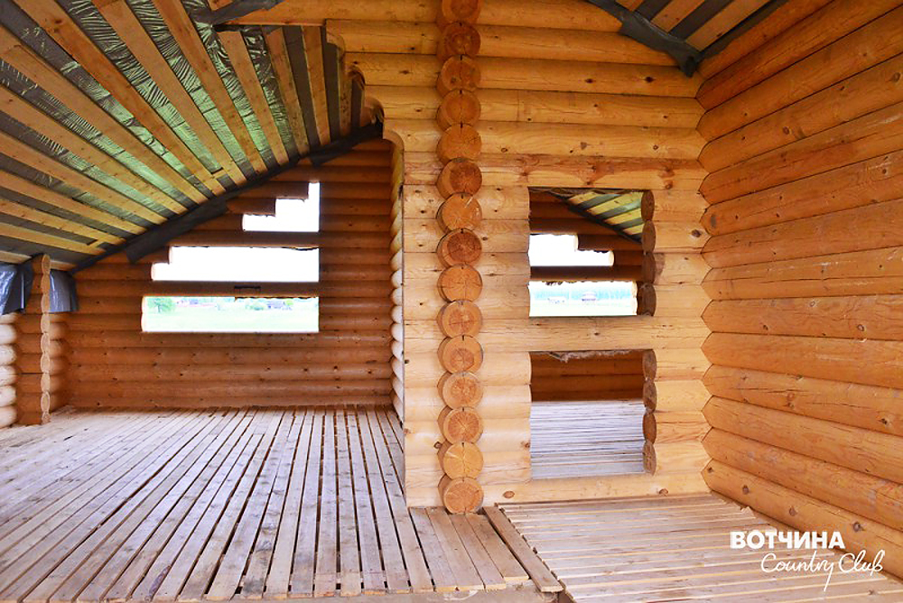
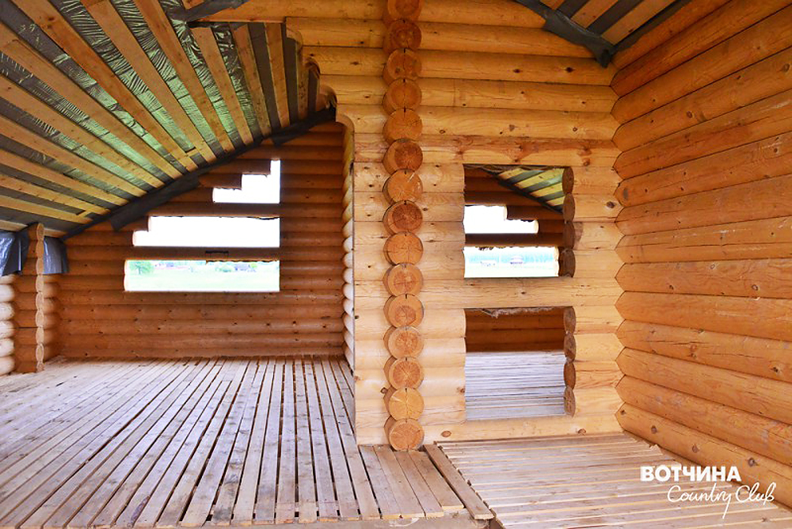

У многих из нас мечта жить в своем загородном доме возникает в детстве. Кто-то ясно осознает это желание в зрелом возрасте. Какая она, твоя мечта о загородной жизни?
Место, размер и цена – первый шаг к обретению очертаний мечты. Здесь появляются отличительные нюансы, знание которых помогает при выборе земельного участка.
Место, экология. Если вы хотите свежий воздух, чистую воду, отдаленность от трассы и тишину, выбирайте участок вдали от города. Узнайте, что расположено рядом с выбранным местом. Уточните о наличии промышленных предприятий. Приятным бонусом послужит присутствие в поселке или рядом производителей свежих, экологически чистых продуктов, выращенных на местной земле без пестицидов и антибиотиков. Фермерское хозяйство на территории поселка, созданное с учетом современных достижений добавит вам и вашей семье выбор: чем и как питаться.
Вотчина Country Club находится в 140 км от Москвы, вдали от суеты. Следуя стремлениям экологической чистоте того, что мы едим, на территории поселка работает Эко-ферма. Мы знаем вкус настоящих деревенских продуктов!

Размер. История приобретения 6-ти соток уходит в прошлое. Площадь участка в поселке эконом-класса не превышает 10-12 соток. Выбирая размер своего землевладения, имеет смысл опираться на стратегию будущего развития вашей семьи.
Эксперты считают, что размер участка по отношению к постройкам рассчитывается из пропорции один к десяти. Например, если в планах строительство дома площадью 200-250 кв. м – это минимум 20 соток, гостевой дом-баня 100 кв. м – еще 10 соток, дополнительно отводим 10 соток для барбекю и хозяйственного блока, а детская или игровая зона займет 5-10 соток. Если вы задумали декоративный прудик или выращивание овощей в парнике, мечтаете о прогулках по вишневому саду, соблюдение правильных пропорций решает вопрос с размещением объектов в отведенном пространстве. Вы удивитесь, но количество соток для соблюдения гармонии на участке приблизится к 100 - это 1 гектар. Если же рассчитывать на собственный сад или живописную рощицу и комфортное расстояние до соседей– 2 гектара, окажется в самый раз.
Очевиден вопрос: во что обойдется такое владение?
100 соток в пределах 150 км от МКАД обойдутся по цене 10-15 соток, при расстоянии не дальше 50 км от Москвы. Сумма сделки на землю составит 2-3 млн. рублей.
Вотчина Country Club занимает площадь 320 га. На выбор покупателя 150 участков размером от 50 соток до 5 га. Вам точно хватит места для воплощения своей мечты о комфортной загородной жизни!


Цена и коммуникации. Если идея с владением полноценным участком, размером 1-2 га вам подходит, то появляется резонный вопрос о качестве сервиса и наличии комплексных коммуникаций в этом экологически чистом и просторном месте.
Наличие действующих коммуникаций весомый аргумент при выборе. Электросети, построенные дороги, газ – неотъемлемая часть для комфортного проживания и благоустройства участка. Наличие охраны, обслуживание общественных территорий, профессиональной и технически оснащенной сервисной службы – ответ на потребность в безопасности и уходе за участком.
Стоит заметить, что цены на коммуникации и сервисы вас приятно удивят. Это связано с иной ценовой политикой районов удаленных от Москвы.
Вотчина Country Club - большие участки, комфорт и много пространства. В поселке существует оптимальный набор технических и инфраструктурных параметров: охрана, дороги, газ, электричество, интернет. В сервисной службе работают профессиональные штатные сотрудники. Охранные функции выполняет лицензированный ЧОП. Кроме круглосуточного видеонаблюдения и патрулирования по реперным точкам в поселке, каждый собственник может подключить персональную охранную сигнализацию. Абонентская плата составит 500 рублей в месяц.
Ландшафт. При выборе места, размера, цены, задействованы как рациональные аргументы «за» и «против», так и впечатления, эмоции и ощущения «своего места». Вы рассмотрели десятки поселков и сделали выбор в пользу одного, подходящего по уровню. На завершающем этапе осталось определиться с пространством для себя и своей семьи, которое предстоит обустроить. Вам помогут ответы на вопросы:
- Какое окружение нравится: открытое или с выходом в лес?
- Будет ли водоем на участке?
- Где будет расположен участок: на возвышенности или скрыт от глаз? Участок будет ровный или с уклоном?
- Какие идеи и замыслы по реализации пространства необходимо осуществить?
Освоение большого участка – дальновидная стратегия. При реализации плана перспектива закладывается изначально, чтобы затем, как в конструкторе складывать части в целое, исходя из финансовых и личных возможностей.
Каждая местность особенная. Рассчитывать на виды и простор возможно в поселке, занимающем не менее 200 гектар, где участки имеют площадь не менее 1 гектара.
При разнообразном и переменном ландшафте легко и быстро облагородить то, что уже дала природа. Идеи по эко-дизайну лежат на поверхности.
К достоинствам ровной поверхности относится: удобство при возведении дома и благоустройства сада, планомерное проникновение воды в почву при поливе растений.
Расположение леса рядом с домом - приятная прохлада в летний зной и изобилие зелени. Лес по границе участка, сосны, ели, березы на самом участке - ощущение гармонии и спокойствия.
Переменная местность характерна наличием как холмов, склонов, так и низменности. Склон холма открывает виды на прилегающие пейзажи. Он наполнен солнечным светом, а главный бонус – создание альпийской горки или водопада.
Низменное расположение участка облегчит поиск воды, а хорошая влажность почвы обеспечит благоприятный рост растений. Достоинством такой местности станет искусственный водоем.
Вотчина Country Club – это переменный ландшафт от равнины до склона, от леса до реки. Фантазируйте в поселке Больших участков!

Строительство и обустройство. Работу по выбору участка мы проводим ради того, чтобы добраться до наслаждения от чаепития на летней веранде своего великолепного дома, где солнечные лучи пробиваются через легкую занавеску в просторную спальню. Впереди предстоит этап планирования дома, территории вокруг, и непосредственно реализации замыслов и планов.
Сегодня загородное домостроение – это множество технологий, материалов и цен. Одним из первых шагов по изучению рынка строительства станет поход на выставку и анализ проектов, планировок, отделок. Окажет поддержку и грамотный архитектор с рекомендациями. Современные строительные компании предлагают широкий спектр услуг и необходимые консультации. Остается найти достойную компанию по домостроению. Как правило, домостроители делятся на две основные категории:
- компании «полного цикла»: производят строительный материал, проектируют и строят дома
- компании-подрядчики: строят дома из закупленных материалов.
Далее, строителей можно классифицировать по специализации материалов: бревно, брус, каркас, кирпич, различные блоки. Преимущество производственной компании с собственным деревообрабатывающим заводом или комбинатом, которая будет строить вам дом, заключается в полном цикле обслуживания, включая материалы. Организация, специализирующаяся исключительно на строительных услугах более разнообразна и многофункциональна в возведении каркасов и блочных домов. Дома из оцилиндрованного бревна или клееного бруса, имеет смысл заказывать только через компании с хорошими производственными мощностями по заготовке и переработке леса.
Вотчина Country Club – организованный поселок с участками без подряда. Мы рекомендуем добросовестных и проверенных партнеров по строительству домов и обустройству участка. Большую часть работ вы можете заказать через Сервисную службу, прямо в поселке. Компания ДомЭко – строит качественные дома из бревна и бруса.
.jpg) 

Инфраструктура и общество. Устав от шума и суеты, все чаще, горожане стремятся на природу, подальше от цивилизации и шумного города. Но наличие комфорта, удобства и приятного общества остается для большинства из нас важным критерием.
Соседи, круг общения, занятость детей, доступность магазина, медицинской помощи, на все это стоит обратить внимание.
Вотчина Country Club – объединяет людей с семейными ценностями, заботящихся о детях и родителях. Это деловые и успешные люди, которые получают удовольствие от загородной жизни, от природы, свежего воздуха и пространства. Для комфорта мы организовали общее пространство ВОТЧИНА-ПАРК: библиотечный зал, прокат, пляж, детскую и спортивную площадки. Лес, озеро, пруды, родники, контактный зоопарк, магазин фермерских продуктов и удивительных вещей, офис сервисной службы, Купель и поклонный Крест – места доступные жителям поселка. Школа, детский сад, больница, магазины, банк расположены в Бавленах, всего в 3 км.
Грунт и глубина залегания грунтовых вод. Существенная часть в строительстве дома – фундамент, подвал и подпол. Обязательно узнайте, как близко к поверхности находится вода. Иногда могут понадобиться дополнительные работы, и возникает потребность создания дренажной системы. Квалифицированный персонал при помощи современных технологий найдет решение и даст рекомендации.
Состав почвы определяет тип фундамента будущих построек и значим для сада и огорода. Оптимальный вариант - плотный грунт с небольшим содержанием глины.
В Вотчина Country Club преобладают суглинистые почвы. Это промежуточный вид грунта между песчаными и глинистыми.

Назначение земель. Статус земельного участка, подразумевает совокупность двух правовых характеристик: категорию земель и разрешённое использование – это и есть правовая форма владения, вид собственности. Построить и зарегистрировать жилой дом возможно на землях с разрешенным использованием под дачное строительство или под ИЖС. На землю оформляется свидетельство о собственности с кадастровым планом. Как и в любом свидетельстве на недвижимость, проверьте документы-основания, которые указаны в бланке. Если вы, сомневаетесь, что ваших знаний достаточно, чтобы изучить документы и сделать верные выводы, лучше обратиться к юридическим услугам.
В Вотчина Country Club владелец земли получает два свидетельства на собственность:
Объект права 1: Земельный участок, категория земель: земли сельскохозяйственного назначения, разрешенное использование: для сельскохозяйственного производства.
Объект права 2: Земельный участок, категория земель: земли сельскохозяйственного назначения, разрешенное использование: ведение дачного хозяйства.
Пусть загородная жизнь принесет вам удовольствие на всех этапах – от идеи до ее воплощения, включая все промежуточные процессы и события!
Error: Undefined variable: category_text File: /var/www/votchina.su/data/www/votchina.ru/templates/template-news.php (65)